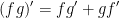
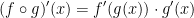
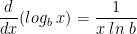

Welcome to a very exciting part of calculus! The derivative.
Building off of what we learned in the Limits section, limits of the form

arise whenever we calculate a rate of change in any of the sciences or engineering, such as a rate of reaction in chemistry or a marginal cost in economics. Since this type of limit occurs so widely, it is given a special name and notation.
The derivative of a function f at a number a, denoted by , is
if this limit exists.
If we write x = a + h, then we have h = x - a and h approaches 0 if and only if x approaches a. Therefore an equivalent way of stating the definition of the derivative, as we saw in finding tangent lines, is
As an aside, if we use the point-slope form of the equation of a line, we can write an equation of the tangent line to the curve y = f(x) at the point (a, f(a)) like so:
The instantaneous rate of change is equal to:
We recognize this limit as being the derivative f'(x1).
To recap, the derivative f'(a) is the instantaneous rate of change of y = f(x) with respect to x when x = a.
Derivative Notations
If we use the traditional notation y = f(x) to indicate that the independent variable is x and the dependent variable is y, then some common alternative notations for the derivative are as follow:
The symbols D and d/dx are called differentiation operators because they indicate the operation of differentiation, which is the process of calculating a derivative.
The symbol dy/dx, which was introduced by Leibniz, should not be regarded as a ratio (for the time being); it is simply a synonym for f'(x). Nonetheless, it is a very useful and suggestive notation, especailly when used in conjunction with increment notation.
A function f is differentiable at a if f'(a) exists. It is differentiable on an open interval (a, b) [or ] if it is differentiable at every number in the interval.
If f is differentiable at a, then fis continuous at a.
We can go even further beyond a single derivative! (f')' = f''. This new function f'' is called the second derivative of f because it is the derivative of the derivative of f.
Differentiation Rules
The formula we use for finding derivatives is useful but quite tedious and painfully slow. As such, there are various rules we can use to speed up this process! These rules are used heavily all throughout calc 1 and calc 2 so get them down really well.
Derivative of a Constant Function
Power Rule (General Version)
If n is a any real number, then
The Constant Multiple Rule
If c is a constant and f is a differentiable function, then

The Sum Rule
If f and g are both differentiable, then
The Difference Rule
If f and g are both differentiable, then
Definition of the Number e
e is a pretty special boy. It is a number such that
Derivative of the Natural Exponential Function
The Product Rule
If f and g are both differentiable, then
In prime notation, it looks like this: 
The Quotient Rule
If f and g are differentiable, then
In prime notation, we have:
One way to remember this is low dee high, high dee low. Low refers to the denominator and high the numerator. The dee refers to taking the derivative.
Derivatives of Trigonometric Functions
I won't lie when I say this is probably the hardest part of calculus (at least, in calc 1 and 2). Trig identities are a bit rough to work with but keep at it!
One thing to note is that f is defined for all real numbers x by f(x) = sin(x).
Also, it is understood that sin(x) means the sine of the angle whose radian measure is x. The same goes for the rest of the trigonometric functions such as cos, tan, csc, sec, and cot.
Also, it's good to note that
and
Now then, please memorize the following! These derivatives are the bread and butter of working with trigonometric functions.
Unfortunately, when it comes to simplifying you will also need to be aware of the trig identities. Refer to the following image to help with this:

The Chain Rule
Let's say we wish to derive the following:
Sadly, the formulas we've learned thus far aren't enough to tackle this! However, notice that F is a composite function. Let y = f(u) = and let u = g(x) = . We can then write y = F(x) = f(g(x)). Or F = . We know how to differentiate both f and g, so it would be useful to have a rule that tells us how to find the derivative of  in terms of the derivatives of f and g.
in terms of the derivatives of f and g.
As it turns out, the derivative of the composite function  is the product of the derivatives of f and g. This fact is one of the most important of the differentiation rules and is called the Chain Rule.
is the product of the derivatives of f and g. This fact is one of the most important of the differentiation rules and is called the Chain Rule.
It seems plausible if we interpret derivatives as rates of change. Regard du/dx as the rate of change of u with respect to x, dy/du as the rate of change of y with respect to u, and dy/dx as the rate of change of y with respect to x. If u changes twice as fast as x and y changes three times as fast as u, then it seems reasonable that y changes size times as fast as x, and so we expect that

Now then, let's get a more formal definition of the chain rule:
If g is differentiable at x and f is differentiable at g(x), then the composite function defined by is differentiable at x and F' is given by the product
In Leibniz notation, if y = f(u) and u = g(x) are both differentiable functions, then

To make things simple, you can remember the Chain Rule in prime notation like so:

You can also remember it in Leibniz notation as well:

The Power rule Combined with the Chain Rule
If n is any real number and u = g(x) is differentiable, then
Alternatively,
Implicit Differentiation
Thus far, the functions we've encountered can be described by expressing one variable explicitly in terms of another like so:
In general, we get y = f(x).
However! Some functions are defined implicitly by a relation between x and y such as
When it comes to implicit differentiation, we differentiate both sides of the equation with respect to x and then solve the resulting equation for y'.

Derivatives of Logarithmic Functions

For when things get a little extra hairy, we can simplify by taking logarithms of both sides. This is known as logarithmic differentiation. It looks a little something like this:
We want to differentiate this but look how complicated it looks! No matter. Let us take logarithms of both sides to trim this down like so:
Now we can differentiate with respect to x.
Then we can just solve for dy/dx
Steps in Logarithmic Differentiation
- Take natural logarithms of both sides of an equation y = f(x) and use the Laws of Logarithms to simplify.
- Differentiate implicitly with respect to x.
- Solve the resulting equation for y'.
L'Hospital's Rule
Suppose f and g are differentiable and on an open interval I that contains a (except possibly at a). Suppose that
or that
(In other words, we have an indeterminate form of type or .) Then
if the limit on the right side exists (or is ).
Indeterminate Powers
Several indeterminate forms arise from the limit
Each of these three cases can be treated either by taking the natural logarithm:
or by writing the function as an exponential:
{kind=link}
{kind=link}
{kind=link}
{kind=link}
{kind=link}
{kind=link}
{kind=link}
{kind=link}
{kind=link}
{kind=link}
{kind=link}
{kind=link}
{kind=link}
{kind=link}
{kind=link}
{kind=link}
{kind=link}
{kind=link}
{kind=link}
{kind=link}
{kind=link}
{kind=link}
{kind=link}
{kind=link}
{kind=link}
{kind=link}
{kind=link}
{kind=link}
{kind=link}
{kind=link}
{kind=link}
{kind=link}
{kind=link}
{kind=link}
{kind=link}
{kind=link}
{kind=link}
{kind=link}
{kind=link}
{kind=link}
{kind=link}
{kind=link}
{kind=link}
{kind=link}
{kind=link}
{kind=link}
{kind=link}
{kind=link}
{kind=link}
{kind=link}
{kind=link}
{kind=link}
{kind=link}
{kind=link}
{kind=link}
{kind=link}
{kind=link}
{kind=link}
{kind=link}